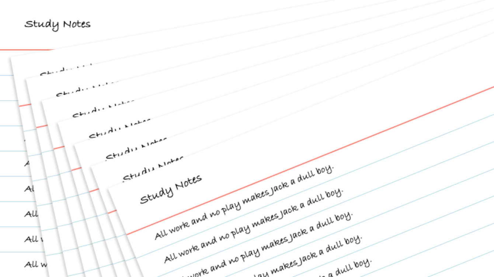

Experience
Web Developer
My journey into web development started back in 1997 with Adobe PageMill 2.0, a tool I focused mostly on frames and image maps—far from ideal, I know! It wasn’t until I began exploring the underlying code that my real passion for development emerged. Since then, I’ve spent countless hours honing my skills, working extensively with relational databases, JavaScript libraries and CSS frameworks.
UX Designer
Throughout my career, I’ve had the privilege of collaborating with talented web designers to bring their visions to life on the web. At other times, I’ve created my own designs for both large and small websites, working on platforms such as WordPress and Salesforce. Recently, I’ve been using Adobe XD and Miro to create interactive wireframes and prototypes, refining the user experience and design process.
Technical Consultant
In the past 5+ years of my career, I’ve focused on consulting for clients trailblazing on the Salesforce platform. This work has included creating enterprise-level email marketing templates in Marketing Cloud and setting up partner community sites in Experience Cloud. I’ve also been involved in technical documentation, refining user stories, and developing with Apex and Lightning Web Components.
Projects
Explore Mars
A personal project created for myself to study different web technologies such as Node.js, ExpressJS, Axios and TailwindCSS. The content comes from the NASA API for Mars Rover Photos and is a fun way to explore the surface of Mars.
Study Notes
A Udemy course project inspired me to build a study notes web application I’d envisioned throughout the course challenges. Developed using Node.js, ExpressJS, PostgreSQL, and prototyped with Bootstrap.
About

When I’m not immersed in writing code or designing web apps, I have a few other passions that fill my time. From spending time with my adorable dog to enjoying hobbies like downhill skiing, I make the most of my offline moments.
Auggie
A few years back I adopted a friendly little 8-year-old Schnoodle named Auggie while fostering dogs for a local rescue group. He can be quite loud sometimes, but he is a great companion who keeps me active by insisting we go for long walks. He is an amazing creature.
Music
At an early age I was drawn to drums from playing high school pep and jazz bands which eventually landed me the John Philip Sousa Award. Primarily a rock drummer, I enjoy listening to heavy metal to alternative rock bands like the Flaming Lips and the Red Hot Chili Peppers.
Hobbies
Recently I’ve acquired an interest in fishing and in the summer I spend the weekends trying to catch elusive walleye. In the winter I travel west for downhill skiing with my family. When not outside I’m watching a movie, looking at comic book art or playing RPG video games.
Connect
If you have any questions about my availability for work or just want to connect, feel free to check out my social media profiles. I’ve been more active on GitHub recently, but if coding isn’t your thing, you might enjoy some fun lake photos from this summer on my Instagram.